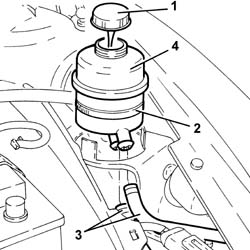
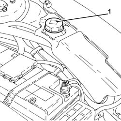
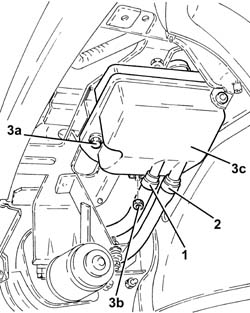
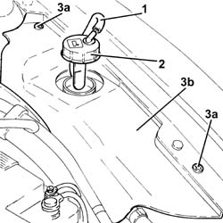
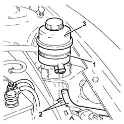

2127C12 hydraulic gear selection fluid reservoir - r r
- Path
- Procedures > 21 GEARBOX > 2127 ELECTRO-HYDRAULIC SELECTION. GEARBOX EXTERNAL. CONTROLS > 2127C hydraulic gear selection system > 2127C12 hydraulic gear selection fluid reservoir - r r
- Kind
- repair procedure (removal / refitting; the operation number is the code)
- Applies to
- all engines; all production periods
- Interactive page
- https://sloeber94.github.io/elrnDB-a156/en/#/3237946
Applies to: all engines; all production periods; only with equipment: Smart gearbox
 Removing
Removing
 Refitting
Refitting1. Remove the electro-hydraulic selection gearbox hydraulic circuit fluid reservoir cap.
Drain the electro-hydraulic selection gearbox hydraulic circuit fluid reservoir.
2. Loosen the band fixing the electro-hydraulic selection gearbox hydraulic circuit fluid reservoir.
3. Disconnect the supply and return pipes from the electro-hydraulic selection gearbox hydraulic circuit fluid reservoir.
4. Remove the electro-hydraulic selection gearbox hydraulic circuit fluid reservoir.

Applies to: all engines; all production periods; only with equipment: Smart gearbox
Refitting
RemovingPlace the electro-hydraulic selection gearbox hydraulic circuit fluid reservoir back in its housing after having connected the supply and return pipes.
Fix the electro-hydraulic selection gearbox hydraulic circuit fluid reservoir to the mounting bracket using the band.
Applies to: engines: 2.0 JTS, 2.0 JTS; all production periods; only with equipment: Smart gearbox
Removing
RefittingPosition the vehicle on the ramp.
1. Remove the electro-hydraulic selection gearbox hydraulic circuit fluid reservoir cap.
Drain the electro-hydraulic selection gearbox hydraulic circuit fluid reservoir.

Applies to: engines: 2.0 JTS, 2.0 JTS; all production periods; only with equipment: Smart gearbox
Undo the bolts and remove the control unit protection.
Proceed with removal 4450B02 left front wheel r r .
Proceed with removal - 7055B90 Left front WHEEL ARCH LINER - R.R. .
1. Loosen the band and disconnect the pipe between the hydraulic circuit fluid reservoir and the electro-hydraulic gear selection electric pump, reservoir side.
2. Loosen the band and disconnect the pipe between the electro-hydraulic gear selection hydraulic unit and the fluid reservoir, reservoir side.
3. Undo the bolt (3a) and the nut (3b), then remove the electro-hydraulic selection hydraulic gearbox circuit fluid reservoir (3c).

Applies to: engines: 2.0 JTS, 2.0 JTS; all production periods; only with equipment: Smart gearbox
Refitting
RemovingPlace the electro-hydraulic selection gearbox hydraulic circuit fluid reservoir back in its housing and secure it using the nuts and the bolt.
Connect the pipe from the electro-hydraulic selection hydraulic actuator unit to the fluid reservoir, reservoir side and tighten the band.
Connect the pipe between the hydraulic circuit fluid reservoir and the electro-hydraulic gear selection electric pump, reservoir side, and tighten the band.
Proceed with refitting - 7055B90 Left front WHEEL ARCH LINER - R.R. .
Proceed with refitting 4450B02 left front wheel r r .
Place the control unit protection back in its housing and secure it using the bolts.
Proceed with refitting 2127C04 ELECTROHYDRAULIC selection gearbox hydraulic system FLUID - Check level and top up if necessary. .
Remove the car from the ramps.
Applies to: engines: 3.2 V6; all production periods; only with equipment: Smart gearbox
Removing
Refitting1. Disconnect the breather pipe from the electro-hydraulic selection gearbox hydraulic circuit fluid reservoir cap.
2. Undo the electro-hydraulic selection gearbox hydraulic circuit fluid reservoir cap and remove it.
Drain the electro-hydraulic selection gearbox hydraulic circuit fluid reservoir using a suitable syringe.
3. Undo the bolts (3a) and remove the protection (3b).

Applies to: engines: 3.2 V6; all production periods; only with equipment: Smart gearbox
1. Loosen the band fixing the electro-hydraulic selection gearbox hydraulic circuit fluid reservoir.
2. Disconnect the supply and return pipes from the electro-hydraulic selection gearbox hydraulic circuit fluid reservoir.
3. Remove the electro-hydraulic selection gearbox hydraulic circuit fluid reservoir.

Applies to: engines: 3.2 V6; all production periods; only with equipment: Smart gearbox
Refitting
RemovingPlace the electro-hydraulic selection gearbox hydraulic circuit fluid reservoir back in its housing after having connected the supply and return pipes.
Fix the electro-hydraulic selection gearbox hydraulic circuit fluid reservoir to the mounting bracket using the band.
Place the protection back in its housing and secure it using the bolt.
Place the electro-hydraulic selection gearbox hydraulic circuit fluid reservoir cap back in its housing.
Connect the breather pipe to the electro-hydraulic selection gearbox hydraulic circuit fluid reservoir cap.
Proceed with refitting - 0010T47 hydraulic system fluid for gearbox with hydraulic selection check level and top up if necessary .
Topics linked from this page (2)
- 2127C04 ELECTROHYDRAULIC selection gearbox hydraulic system FLUID - Check level and top up if necessary.
- 4450B02 left front wheel r r